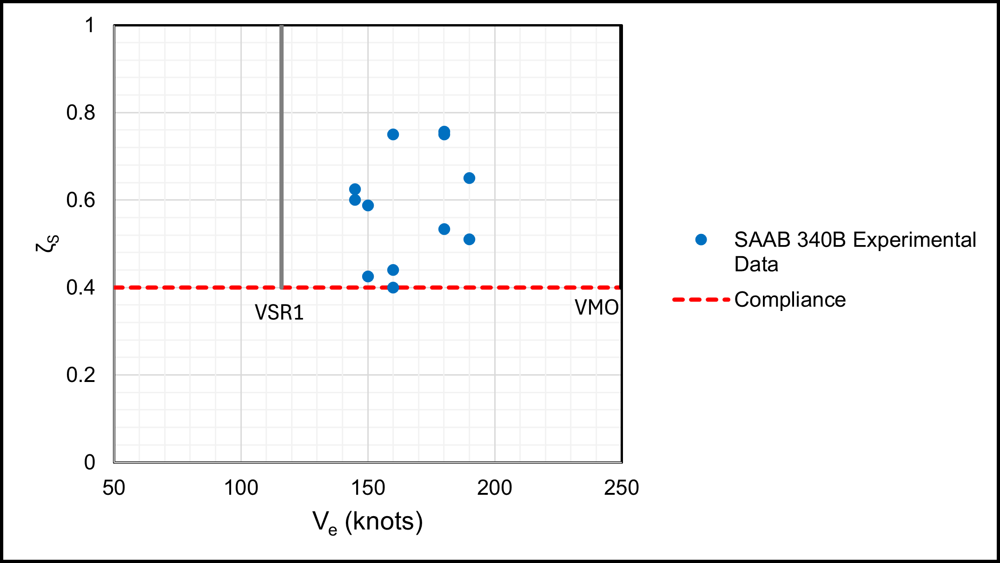
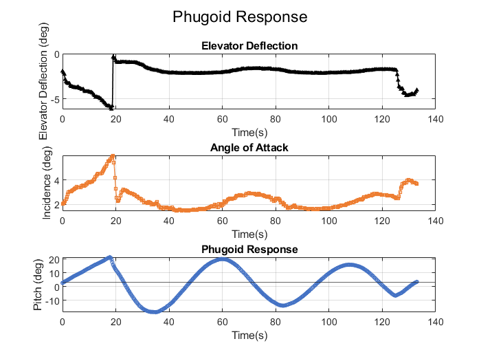
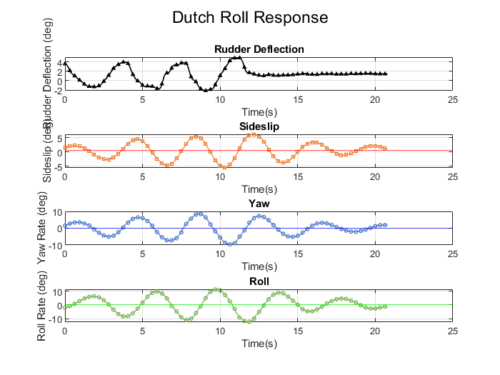
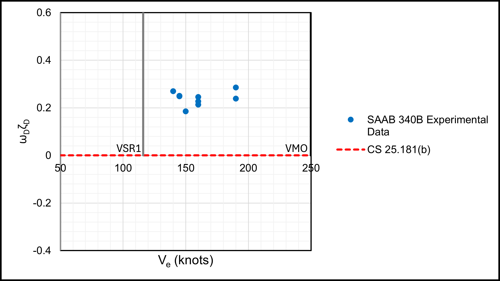

Problem
Seven real flight tests were flown on Cranfield's research Saab 340B, G-NFLB, in October 2024, to characterise the aircraft against the certification requirements of EASA CS-25 (Certification Specifications for Large Aeroplanes) across lift & drag, cruise performance, longitudinal and lateral/directional stability, climb & take-off performance, and dynamic stability. Six of us split the analysis by area and each wrote an individually-authored section of the shared report. My section was Dynamic Stability Characteristics — quantifying the aircraft's four classical dynamic modes (short-period pitch oscillation, phugoid, roll mode and Dutch roll) directly from in-flight data, and checking two of them against CS-25's explicit damping requirements (CS 25.181(a) and (b)).
Approach
Each mode needed a different excitation technique in the air. For the short-period pitch oscillation (SPPO), the aircraft was trimmed and given a sharp impulse on the yoke, then the opposite impulse once the response had died away. The phugoid was excited more gently — releasing the yoke to trim from an offset elevator angle and letting the long-period pitch/airspeed exchange develop on its own. Dutch roll was excited with a series of rudder doublets, recorded both with the yaw damper engaged and disengaged. The roll mode was excited by banking to 30°, applying a small aileron step, and centring the stick again once the aircraft reached 40° of bank.
Extracting natural frequency and damping ratio from each recorded response needed a different graphical technique depending on how the mode actually behaved in the data. The heavily-damped SPPO had too much sensor noise for a reliable maximum-slope fit, so I used the Time Ratio Method instead. The lightly-damped phugoid and Dutch roll, each with more than three visible overshoots, were suited to the Logarithmic Decrement Method. The first-order roll mode used a simple time-constant extrapolation — the time for roll rate to reach 63.2% of its steady-state value, averaged over four step inputs per flight. Each flight-test-derived value was then checked against a reduced-order analytical model built from the aircraft's aero-derivatives, and benchmarked against archival Jetstream J31 data as a class-comparison baseline.
Result
The SPPO showed the expected trend as centre of gravity moved aft: natural frequency decreased (falling manoeuvre margin) while damping ratio increased, and the reduced-order model tracked this reasonably well despite scatter in the flight data. More importantly for certification, every tested point exceeded the CS 25.181(a) minimum damping ratio of 0.4 across the speed range flown:

The phugoid behaved exactly as theory predicts: natural frequency fell as true airspeed increased, damping stayed low (ζp ≈ 0.04–0.07), and the effect of the elevator down-spring was visible directly in the recorded response — the pilot has to make a small correction on releasing the yoke as the trim position shifts:

Dutch roll gave the cleanest result of the four modes. Sideslip, yaw rate and roll rate all showed a textbook lightly-damped lateral/directional oscillation, and the log-decrement fits produced a specific damping coefficient (ωDζD) that was positive across every speed tested — meeting the CS 25.181(b) requirement that Dutch roll be positively damped with controls free:


The roll mode was the weakest result of the four. An acceptable time constant was obtained across the tested speed range, but with noticeably more scatter against both the reduced-order model and the Jetstream J31 baseline than any other mode.
Limitations
The roll mode and Dutch roll data both showed a low-fidelity character — noise and unsteadiness that persisted even after the control input had stopped, which I attribute (along with the report as a whole) to a mix of pilot error, instrument error, and the absence of any signal filtering or processing before analysis. The SPPO's frequency trend against centre of gravity was directionally correct but, in the report's own words, "not very discernible due to the high level of scatter and low correlation of data." CS 25.181(a) compliance was only demonstrated within the range of speeds actually flown, not near the aircraft's operating speed limits, and not with the primary controls held in a fixed position — both would need further test flights to close out fully. More generally, each mode's frequency and damping came from a single flight-test excitation per condition, with no repeat runs to separate genuine test-to-test scatter from measurement noise.